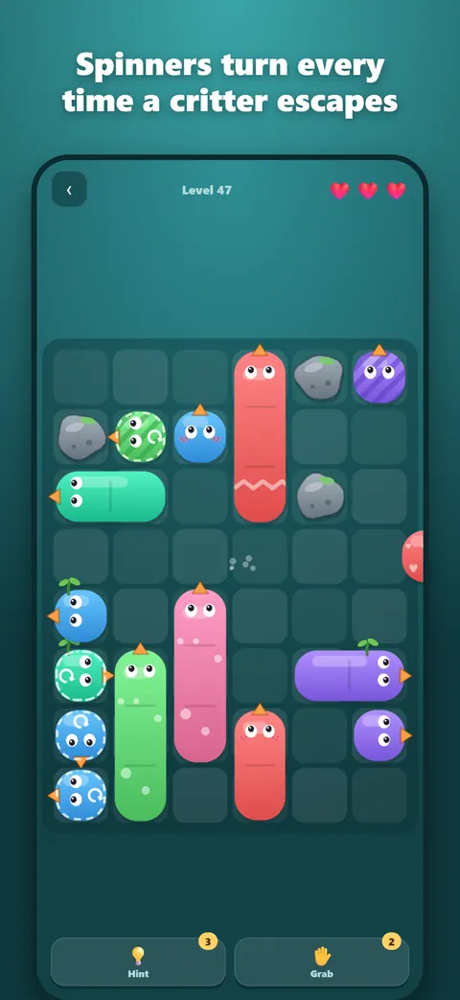
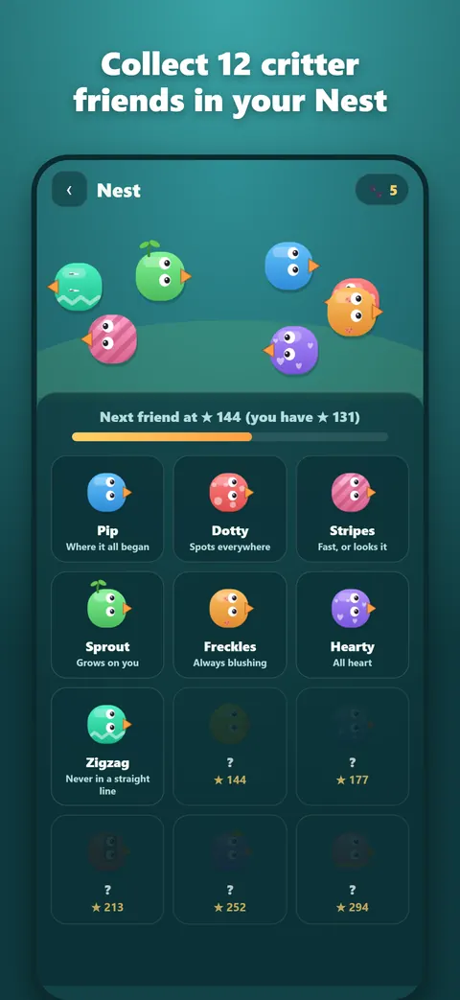
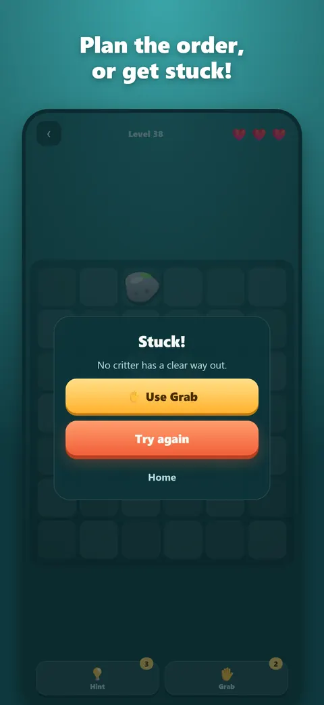

Games / Shoova

Tap-away planning puzzle
Shoova
Every critter runs the way it faces. Some of them spin. Plan the order, shoo them all off the board and fill your Nest with friends.
Coming to the App Store. The full game is free to play in your browser now.



How to play
- Tap a critter: it runs the way its beak points.
- Spinners (dashed outline) turn a quarter every time someone else escapes.
- Stones never move, and a spinner facing one is stuck.
- Bump into someone and you lose a heart. Clear the board to earn up to three stars.
- Press and hold a critter to see where it will run.
Your Nest
- Every critter you shoo moves into your Nest.
- Stars unlock 12 friends: Dotty, Sprout, Bandit, Royal, Rainbow and more.
- New friends show up on your boards, and each brings a welcome present.
Help when you need it
- Hint shows a move that keeps the board solvable.
- Grab lifts any critter off the board.
Made for thinking
- Hundreds of levels that grow step by step, every one guaranteed solvable.
- No timers, no rush.
- Plays offline, no account needed.
Tips
- Start with the critters whose path is already clear. Each escape opens room for the ones behind it.
- Count the spinners before you tap. Every escape turns all of them a quarter, so the order of escapes decides where they end up facing.
- A spinner facing a stone is stuck until something else escapes and turns it, so plan a move that frees it.
- Press and hold whenever you are unsure. Seeing the path costs nothing; a bump costs a heart.
- If the board looks locked, take a Hint: it always shows a move that keeps the level solvable.
Questions
Is Shoova on the App Store?
Not yet. You can already play the full game in your browser at shoova.alaystudio.app.
Is every level solvable?
Yes. Every level is generated and checked so that at least one order clears the board.
Is there a timer?
No. There are no timers; you lose a heart only when a critter bumps into another.
Which languages does it support?
English and Turkish.